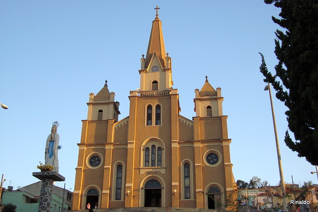

Memorial Histórico
O processo de interiorização do território brasileiro apresenta inúmeros aspectos singulares e variantes: para além das conhecidas expedições em busca de ouro e de riquezas minerais, importa destacar as grandes extensões de terras ocupadas através do processo de sesmarias. No final do século XVIII, tal dinâmica ainda vigorava em muitos dos sertões interioranos, contribuindo para que diversificadas histórias emergissem nesse contexto de formação de novos povoados. Tendo como referencial o panorama acima descrito, as sesmarias denominadas Campos emergem como uma das principais norteadoras dos movimentos populacionais da região sulmineira.
Ao serem subdivididas, partes dessas novas terras foram concedidas ao casal José Rodrigues Braga e Maria da Fé de São Bernardo, quando do estabelecimento desses fazendeiros no conhecido Sertão da Pedra Branca. A partir desse momento fundante, outra denominação bastante comum para a localidade foi Fazenda dos Campos, numa clara alusão à sesmaria já existente.
Segundo alguns registros orais, o então proprietário José Braga falecera prematuramente, deixando sua senhora a cargo de todas as responsabilidades oriundas do cotidiano da época. Diante das referidas circunstâncias, Dona Maria da Fé dedicou-se, magistralmente, a um tipo de ofício até então pouco explorado pelas mulheres: as práticas agropecuárias, as quais exigiam bastante perspicácia por parte de seus administradores. Entretanto, outros relatos existentes afirmam que a conhecida senhora já exercia muitas dessas atividades antes mesmo da morte do marido; nesse sentido, não haveria grandes obstáculos a serem superados pela mulher, visto que a mesma provavelmente se acostumara aos trabalhos rurais.
Interessante destacar que a imagem da fazendeira acabou por representar as próprias matrizes desse município mineiro. Antes mesmo de se completar um século de sua chegada na região, várias narrativas veicularam-se em torno de Dona Maria da Fé, sendo o conhecido Dr. Fausto Ferraz um dos seus principais precursores. Este homem, na ocasião da inauguração da Estação Ferroviária nos idos de 1891, proferiu um discurso emblemático no qual a figura de Maria da Fé emergia como mulher enérgica, corajosa e pioneira.
Importante ressaltar que a referida sesmaria já existia antes do século XIX, sendo novamente dividida durante esse período. Posteriormente, o nome Pedra Branca foi incorporado ao atual município de Pedralva, cidade vizinha de Maria da Fé. Apesar de não existirem grandes extratos documentais alusivos à fazendeira, importa ressaltar que a oralidade dos moradores se transformou em um dos principais fragmentos desse passado singular. Construídos historicamente, num misto de ficção e realidade, os depoimentos orais acabaram por engendrar versões peculiares em torno da senhora Maria da Fé.
Pertencentes ao imaginário coletivo da cidade, os topônimos Maria e Fé simbolizam muito mais do que uma simples homenagem a essa mulher: ambos são representativos das inúmeras vozes sociais que (re)criam a própria história da antiga e saudosa Fazenda dos Campos.
Histórico da cidade
“Nas novas terras das Gerais, a figura de uma grande mulher...”.
O processo de interiorização do território brasileiro apresenta inúmeros aspectos singulares e variantes: para além das conhecidas expedições em busca de ouro e de riquezas minerais, importa destacar as grandes extensões de terras ocupadas através do processo de sesmarias. No final do século XVIII, tal dinâmica ainda vigorava em muitos dos sertões interioranos, contribuindo para que diversificadas histórias emergissem nesse contexto de formação de novos povoados. Tendo como referencial o panorama acima descrito, as sesmarias denominadas Campos emergem como uma das principais norteadoras dos movimentos populacionais da região sulmineira.
Ao serem subdivididas, partes dessas novas terras foram concedidas ao casal José Rodrigues Braga e Maria da Fé de São Bernardo, quando do estabelecimento desses fazendeiros no conhecido Sertão da Pedra Branca. A partir desse momento fundante, outra denominação bastante comum para a localidade foi Fazenda dos Campos, numa clara alusão à sesmaria já existente.
Segundo alguns registros orais, o então proprietário José Braga falecera prematuramente, deixando sua senhora a cargo de todas as responsabilidades oriundas do cotidiano da época. Diante das referidas circunstâncias, Dona Maria da Fé dedicou-se, magistralmente, a um tipo de ofício até então pouco explorado pelas mulheres: as práticas agropecuárias, as quais exigiam bastante perspicácia por parte de seus administradores. Entretanto, outros relatos existentes afirmam que a conhecida senhora já exercia muitas dessas atividades antes mesmo da morte do marido; nesse sentido, não haveria grandes obstáculos a serem superados pela mulher, visto que a mesma provavelmente se acostumara aos trabalhos rurais.
Interessante destacar que a imagem da fazendeira acabou por representar as próprias matrizes desse município mineiro. Antes mesmo de se completar um século de sua chegada na região, várias narrativas veicularam-se em torno de Dona Maria da Fé, sendo o conhecido Dr. Fausto Ferraz um dos seus principais precursores. Este homem, na ocasião da inauguração da Estação Ferroviária nos idos de 1891, proferiu um discurso emblemático no qual a figura de Maria da Fé emergia como mulher enérgica, corajosa e pioneira.
Importante ressaltar que a referida sesmaria já existia antes do século XIX, sendo novamente dividida durante esse período. Posteriormente, o nome Pedra Branca foi incorporado ao atual município de Pedralva, cidade vizinha de Maria da Fé. Apesar de não existirem grandes extratos documentais alusivos à fazendeira, importa ressaltar que a oralidade dos moradores se transformou em um dos principais fragmentos desse passado singular. Construídos historicamente, num misto de ficção e realidade, os depoimentos orais acabaram por engendrar versões peculiares em torno da senhora Maria da Fé.
Pertencentes ao imaginário coletivo da cidade, os topônimos Maria e Fé simbolizam muito mais do que uma simples homenagem a essa mulher: ambos são representativos das inúmeras vozes sociais que (re)criam a própria história da antiga e saudosa Fazenda dos Campos.
“Povoando, plantando e seguindo a canção...”
Antes de continuarmos a presente exposição, interessa ressaltar os seguidos esforços da comunidade local em resgatar alguns fragmentos documentais da cidade. Nesse sentido, para além da oralidade bastante cultivada entre os moradores, os registros escritos despontam como instrumentos capazes de dialogarem com a história desse município mineiro. Um exemplo significativo que atesta a existência de D. Maria da Fé na região consiste na certidão de casamento encontrada, há aproximadamente 4 anos; dessa forma, muitas incertezas oriundas das memórias orais acabam por serem esclarecidas nesse tipo de documentação. Eis alguns dos trechos dessa declaração oficial:
“Aos vinte e cinco de fevereiro de mil setecentos setenta e oito, quasi meio dia, fiz y proclameiy, na forma do Concílio de Trento, e (...) impedimento algum, nezta Igreja de Nossa Senhora da Soledade de Itajubá, precedendo o Sacramento da Penitenica, como licença do Mº. Reverendo Doutor Vigário da Vara do (...) em presença (...) Joseph Rodrigues Bueno e Nome Vigário (...) teztemunhey abayxo asignada, (...) em face da Igreja por Marido e Mulher por palavra de presente Joseph Rodriges Braga com Maria da Fé de San Bernardo.”
Através deste excerto, pode-se averiguar que a data do casamento coincide com os conteúdos dos relatos orais: a época da chegada do casal de fazendeiros na região dos Campos fora, justamente, em finais do século XVIII. Além disso, a celebração do matrimônio aconteceu nas imediações do atual município, evento este que viabilizaria a instalação definitiva de José Rodrigues Braga e de Dona Maria da Fé na antiga Fazenda dos Campos.
Retornando ao processo histórico de formação do povoado de Campos de Maria da Fé, cumpre destacar que outras divisões territoriais foram realizadas na referida região. Os nomes de João Carneiro Santiago e José Corrêa de Carvalho surgem como novos referenciais, sendo os mesmos oriundos da Vila de Cristina. Posteriormente, já em meados do século XIX, ocorrem sucessivas repartições entre os seus respectivos herdeiros que, acompanhadas das vindas de outras famílias, dinamizaram significativamente a localidade. Nessa medida, as culturas agrícolas integravam as aspirações desses anônimos povoadores, responsáveis diretos pelo desenvolvimento das terras sulmineiras. No dia 27 de junho de 1859, de Campos de Maria da Fé torna-se oficialmente um distrito reconhecido pela Província de Minas Gerais.
Ao apresentar como principal atividade de subsistência as culturas agrícolas, a antiga localidade passou a oferecer boas condições de estalagem para os tropeiros viajantes. Situada numa área estratégica de entrecruzamento de diversos caminhos e rotas, logo se instalou a Estrada de Ferro do Sapucay6, cujos principais objetivos residiam numa maior dinamização do interior brasileiro através da circulação de mercadorias e pessoas. As obras da incipiente linha férrea iniciaram-se em Campos de Maria da Fé no ano de 1890; concomitantemente, surgem novas construções de residências e de estabelecimentos comerciais. O antigo armazém dos senhores João Ribeiro de Paiva e Honório Costa desponta, por exemplo, como a primeira casa de negócios responsável pelo atendimento das necessidades da população que se instalava às margens da ferrovia.
A estação ferroviária foi inaugurada no dia 27 de junho de 1891, trazendo em seu nome a qualificação da emblemática Dona Maria da Fé. Para além de uma simples homenagem à fazendeira pioneira da região, a referida estação acabou por representar a matriz geradora da nova vila que surgia: a Vila de Campos de Maria da Fé. Pode-se inferir que a partir da utilização sistemática da linha férrea, o próprio cotidiano dos moradores apresentou significativas mudanças - como escolas, igreja e pontos comerciais – as quais simbolizavam a nova fase de crescimento do antigo distrito. No que toca às questões político-administrativas, a emancipação do município acompanhou a própria dinâmica do desenvolvimento da região: após a criação da Paróquia de Maria da Fé nos idos de 1908, a elevação de categoria à cidade foi promulgada no dia 1º de junho de 19127. A sede municipal permaneceria com o nome de Campos de Maria da Fé por mais de vinte anos, e, somente em 07 de setembro de 1923 a denominação passou a ser Maria da Fé, permanecendo até os dias atuais.
Por fim, interessa refletir acerca do subtítulo da presente secção. Numa clara alusão aos versos de uma música por demais conhecida8, os verbos no gerúndio sugerem a própria dinâmica do processo histórico mariense: nessa medida, povoando e plantando sumarizam dois tipos de práticas constantes na referida região, desde os tempos da pioneira Maria da Fé, passando pelas primeiras famílias, até atingir os inúmeros anônimos que lá se estabeleceram com a estrada de ferro. Ademais, o topônimo canção (mencionado no final do excerto) acaba por metaforizar os múltiplos sentidos empregados por esses variados atores sociais no viver da cidade; melodia esta que representa a própria história cotidiana de Maria da Fé...
Apogeu e crise na economia mariense posteriormente ao movimento emancipatório, a cidade iniciou uma série de obras infra-estruturais, cujos principais aspectos objetivaram dinamizar os serviços de atendimento à população: aberturas de ruas e novas estradas; construções de praças e jardins públicos; instalações dos sistemas de água e eletricidade; formação de grupos escolares e colégios ginasiais; essas e outras realizações acabaram por representar significativas mudanças em Maria da Fé.
Articuladas a esse panorama de prosperidade, as lavouras de batata despontavam como principais responsáveis pelo crescimento sócio-econômico do município. Grande parte dos moradores da região estava envolvida no processo da bataticultura, a qual contemplava as etapas de plantio, colheita, armazenamento e distribuição do produto. A produção atingiu seu respectivo apogeu nas décadas de 70 e 80, época em que Maria da Fé se tornou a maior produtora de batatas no território nacional, com o volume anual de 46 mil toneladas. Entretanto, no início dos anos 90, observou-se uma acentuada crise na cultura desse gênero, tendo em vista a conjugação dos seguintes fatores: sucessivas pragas nas sementes utilizadas para o plantio; cortes sistemáticos nos investimentos governamentais; dificuldades oriundas da baixa mecanização no campo e competitividade com outros mercados, principalmente Argentina e Santa Catarina. Nessa medida, as principais fontes de renda e de trabalho sofreram consideráveis impactos, ocasionando no aumento crítico do desemprego e da falta de recursos”. (Dados fornecidos pela Empresa Memória Arquitetura)